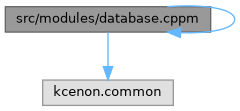

- Generated by
 1.12.0
1.12.0
|
Database System 1.0.0
Advanced C++20 Database System with Multi-Backend Support
|
Primary C++20 module for database_system. More...

Go to the source code of this file.
Classes | |
| struct | kcenon::database::module_version |
| Version information for database_system module. More... | |
Namespaces | |
| namespace | kcenon |
| namespace | kcenon::database |
Primary C++20 module for database_system.
This is the main module interface for the database_system library. It aggregates all module partitions to provide a single import point.
Usage:
Module Structure:
Dependencies:
Definition in file database.cppm.